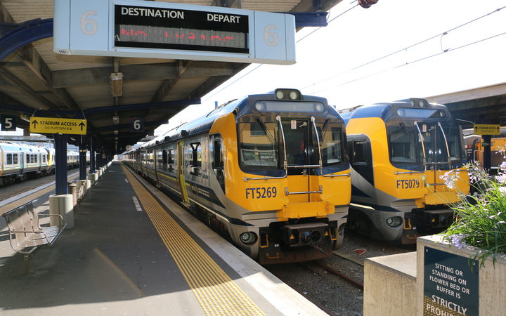

Public Transport
Public Transport is an important network infrastructure in Wellington city as it provides a means of transport all over the city all throughout the day and weeks for alot of passengers living in Wellington region to get any place and where at any time it is also an organised network infrastructure through Train and Bus services that are constantly running and required allday everyday.
